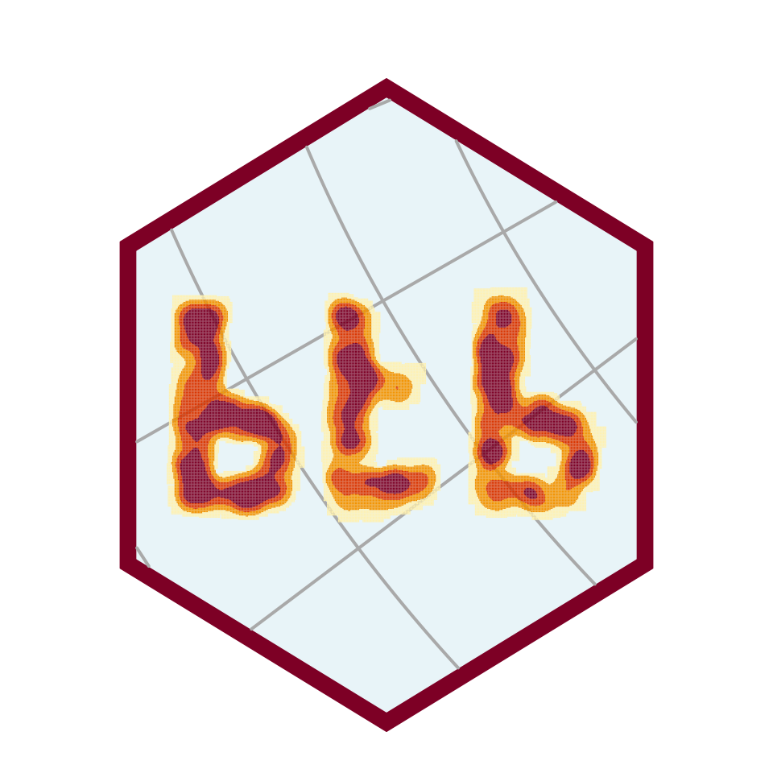

- Load the packages you need
- Create the letters polygons “b” “t” and “b”
b1 <- "POLYGON ((-12076233 5319120, -11880555 5328904, -11528333 5201712,-11362006 4986466, -11391358 4683163, -11479413 4438565, -11782715 4311374,-12448023 4340726, -12389319 6229026, -12017530 6229026, -12076233 5319120),(-12164208 4569828, -11795932 4579271, -11663730 4692586, -11682616 4938104,-12145322 5060862, -12164208 4569828))"
t <- "POLYGON ((-11031051 6184577, -11049937 4305424, -10483358 4295981,-10218955 4456512, -10077310 4692586, -10426700 4702029, -10719433 4579271,-10719433 5032534, -10709990 5315823, -10332271 5315823, -10285056 5561340,-10700547 5561340, -10709990 6146805, -11031051 6184577))"
b2 <- "POLYGON ((-9376233 5319120, -9180555 5328904, -8828333 5201712,-8662006 4986466, -8691358 4683163, -8779413 4438565, -9082715 4311374,-9748023 4340726, -9689319 6229026, -9317530 6229026, -9376233 5319120),(-9464208 4569828, -9095932 4579271, -8963730 4692586, -8982616 4938104,-9445322 5060862, -9464208 4569828))"
letters = st_as_sf(data.frame(geom=c(b1,t,b2)), wkt = "geom") %>% st_set_crs(3857)
plot(letters)- Create the hex logo
letters_bbox <- st_bbox(st_buffer(letters,500000))
dx = (letters_bbox[["xmax"]] - letters_bbox[["xmin"]])/2
dy = (letters_bbox[["ymax"]] - letters_bbox[["ymin"]])/2
coords_hex <- hexcoords(dx = dx, dy = dy)
corners <- tibble(x = coords_hex$x + letters_bbox[["xmin"]] + dx,
y = coords_hex$y + letters_bbox[["ymin"]] + dy)
corners <- rbind(corners, corners[1,])
hexagon <- st_polygon(list(as.matrix(corners)))
hexagon_int <- st_buffer(hexagon,-150000)
lines <- st_as_sf(st_graticule(st_bbox(hexagon),lat = seq(-32,80,8), crs = 2154))
lines <- st_intersection(lines %>% st_set_crs(NA),hexagon_int)
#> Warning: attribute variables are assumed to be spatially constant throughout all
#> geometries
plot(hexagon)
plot(hexagon_int, add=TRUE)
plot(lines, col="black",add = TRUE)
#> Warning in plot.sf(lines, col = "black", add = TRUE): ignoring all but the first
#> attribute- Sample points inside the letters
sample <- st_sample(letters,1000)
plot(hexagon)
plot(hexagon_int, add=TRUE)
plot(letters,add=TRUE)
plot(st_geometry(lines), col="black",add = TRUE)
plot(st_geometry(sample),add=TRUE)- Spatial smoothing
sample <- data.frame(st_coordinates(sample))
sample$nobs <- 1
colnames(sample) <- c("x","y","nobs")
sfCarrLiss <- btb::kernelSmoothing(dfObservations = sample,
sEPSG = "3857",
iCellSize = 10000,
iBandwidth = 200000)- Plot the result with
mapsf!
mf_init(x=hexagon,theme = mf_theme(list(bg = "#FFFFFFFF")))
mf_map(x = hexagon,
border="#7D0025",
col="#7D0025",
add = TRUE)
mf_map(x = hexagon_int,
border="#e8f4f8",
col="#e8f4f8",
add = TRUE)
mf_map(x = lines,
col="darkgrey",
lwd = 2,
add = TRUE)
mf_map(x = sfCarrLiss,
type = "choro",
var="nobs",
breaks = "quantile",
nbreaks = 4,
lwd=1,
pal = c("#FEF1B2",rev(hcl.colors(n=5, palette ="YlOrRd")[1:3])),
border=NA,
leg_pos=NA,
add = TRUE)